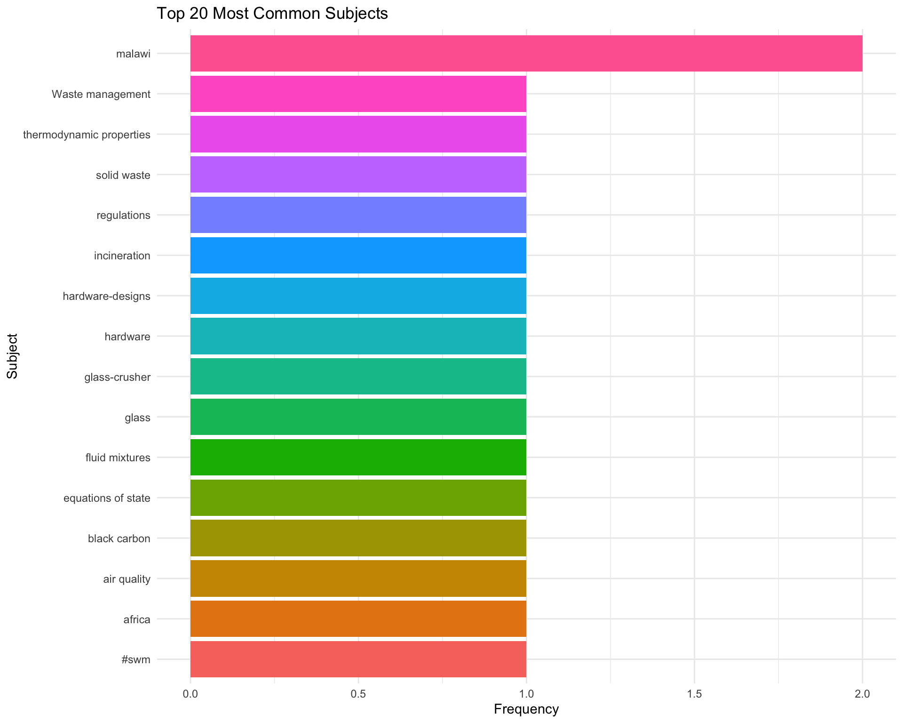

Zenodo Research Group Publications Analysis
Overview
This analysis covers 28 publications from the research group, spanning from November 17, 2022 to October 29, 2025.
Key Statistics:
- Total records: 28
- Unique authors: 71
- Date range: 2022-11-17 to 2025-10-29
Publication Trends Over Time

Resource Types

Licenses
| License ID | License Name | Count | Percentage |
|---|---|---|---|
| cc-by-4.0 | Creative Commons Attribution 4.0 International | 28 | 100 |
Collaboration Patterns


Topics

Communities

Community Membership Statistics:
- Records in communities: 2 / 28 (7.1%)
- Records not in communities: 26
- Unique communities: 1
| Community | Title | Records |
|---|---|---|
| openwashdata | Open WASH data by building Open Science Competencies and Community | 2 |
Related Identifiers

Metadata Completeness
ORCID Coverage:
- Authors with ORCID: 126 / 141 (89.4%)
- Unique ORCIDs: 54
Affiliation Coverage:
- Authors with affiliation: 25 / 141 (17.7%)

Affiliation

Resource Type Characteristics
| Resource Type | Count | Avg Size (MB) | Median Size (MB) | Max Size (MB) |
|---|---|---|---|---|
| software | 20 | 32.83 | 10.23 | 348.94 |
| dataset | 6 | 194.08 | 11.12 | 1114.93 |
| model | 1 | 4.51 | 4.51 | 4.51 |
| physicalobject | 1 | 77.69 | 77.69 | 77.69 |
GitHub Integration
GitHub Repository Links:
- Records with GitHub: 20 / 28 ( 71.4 %)
| Relation | Count |
|---|---|
| issupplementto | 15 |
| compiles | 5 |

Note:
- “issupplementto”: Zenodo record supplements the GitHub repository (e.g., data/manuscripts)
- “compiles”: Zenodo record is compiled from the GitHub repository (e.g., software releases)
Summary Statistics
| total_records | total_size_gb | avg_size_mb | median_size_mb | avg_authors |
|---|---|---|---|---|
| 28 | 1.86 | 67.97 | 10.23 | 5.04 |